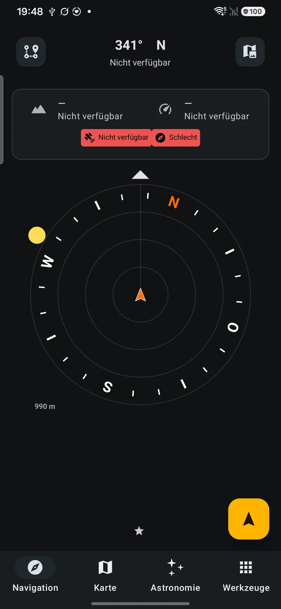
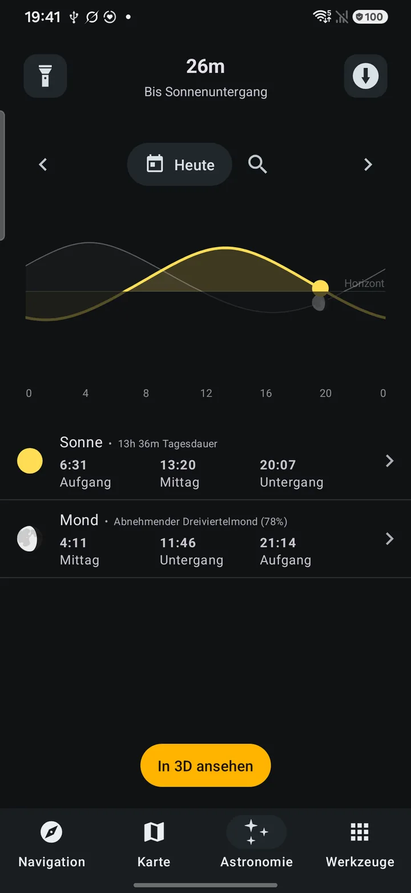
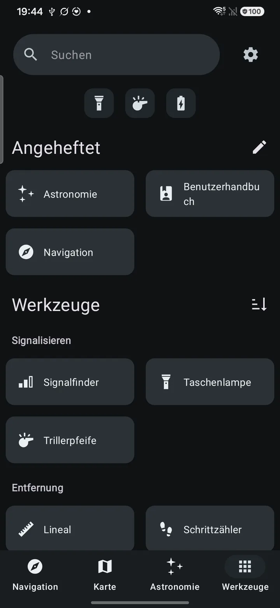
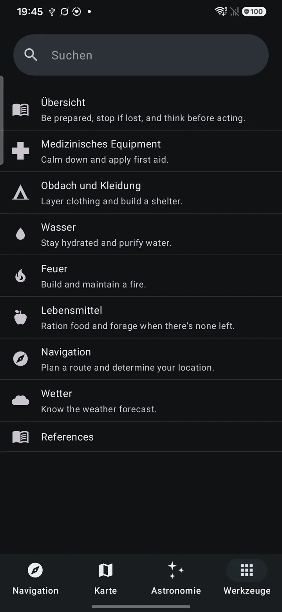

Navigate
Compass, beacon navigation, backtrack path recording, photo maps and triangulation.
Android / v8.2.0 / offline
A private field instrument for hiking, backpacking, camping and geocaching. Navigation, weather, astronomy and practical tools—ready beyond reception.

01 / Capability
A field-sheet of practical systems, organized for what you need to do—not for keeping you on a screen.
Compass, beacon navigation, backtrack path recording, photo maps and triangulation.
Pressure history and forecast, cloud identification, temperature estimation and lightning distance.
Sunrise, sunset, blue and golden hour, moon phase, sunset alerts and AR views.
Offline tide estimates based on tables entered by the user.
Altimeter, pedometer, clinometer, bubble level, ruler and converter.
Flashlight with SOS, whistle and white noise.
Metal detector, light meter, solar panel aligner and water boil timer.
Packing lists, notes, QR scanner, sensor overview, diagnostics, widgets and an offline survival guide.
02 / Network boundary
Outsense does not declare Android’s internet permission, so Android prevents it from opening any network connection.
Two explicit exceptions: files you export yourself through Android’s file picker, and Android’s own system backup into your personal Google account when you have it switched on. Read the full policy.
03 / In hand
The shipping interface, German UI. Focused instruments, legible data and references that remain available away from reception.



Outsense works with no network. Map files and elevation models must be imported or downloaded by you before you need them.
Android / Version 8.2.0
Outsense is not yet available on Google Play.
Coming to Google Play